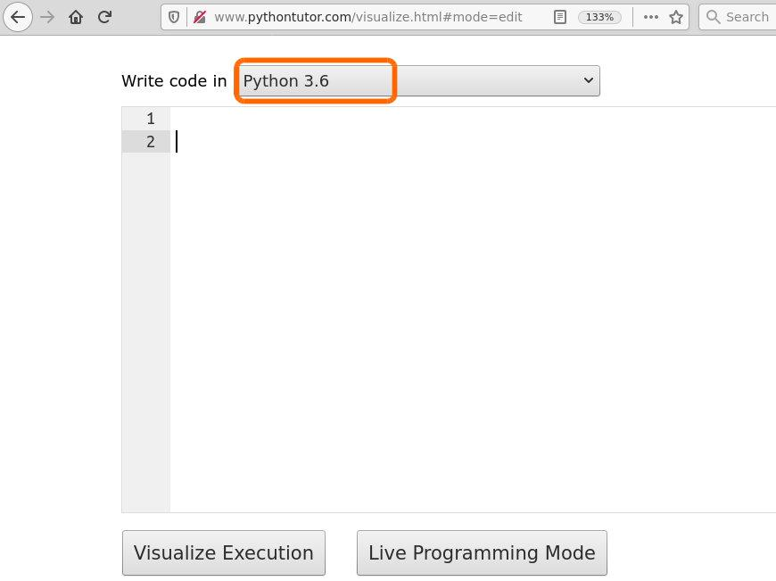
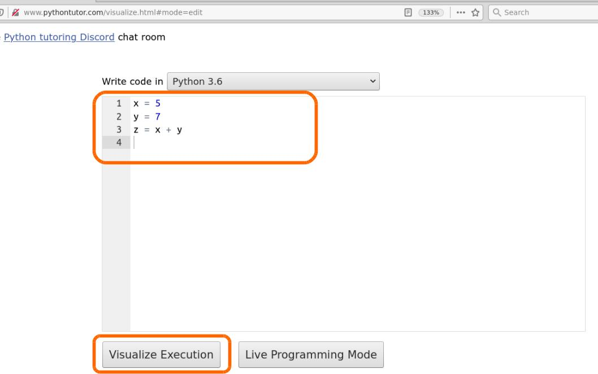
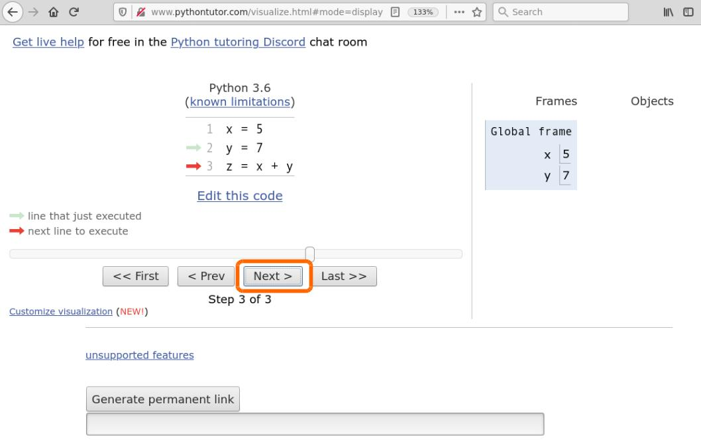
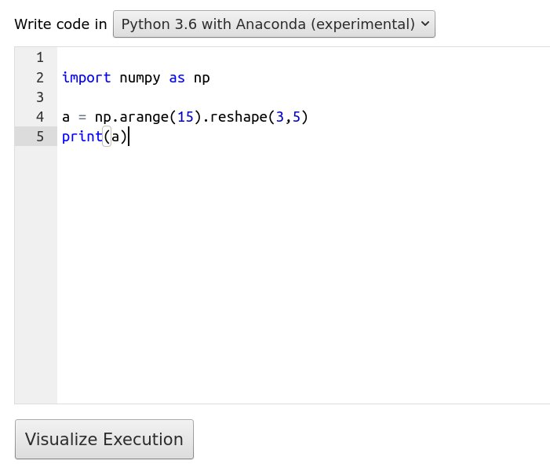

Tools and scripts
Download exercises zip
REQUISITES:
Having Python 3 and Jupyter installed: if you haven’t already, see Installation
Python interpreter
In these tutorials we will use extensively the notebook editor Jupyter, because it allows to comfortably execute Python code, display charts and take notes. But if we want only make calculations it is not mandatory at all!
The most immediate way (even if not very practical) to execute Python things is by using the command line interpreter in the so-called interactive mode, that is, having Python to wait commands which will be manually inserted one by one. This usage does not require Jupyter, you only need to have installed Python. Note that in Mac OS X and many linux systems like Ubuntu, Python is already installed by default, although sometimes it might not be version 3. Let’s try to understand which version we have on our system.
Let’s open system console
Open a console (in Windows: system menu -> Anaconda Prompt, in Mac OS X: run the Terminal)
In the console you find the so-called prompt of commands. In this prompt you can directly insert commands for the operating system.
WARNING: the commands you give in the prompt are commands in the language of the operating system you are using, NOT Python language !!!!!
In Windows you should see something like this:
C:\Users\David>
In Mac / Linux it could be something like this:
david@my-computer:~$
Listing files and folders
In system console, try:
Windows: type the command dir and press Enter
Mac or Linux: type the command ls and press Enter.
A listing with all the files in the current folder should appear. In my case appears a list like this:
LET ME REPEAT: in this context dir and ls are commands of the operating system, NOT of Python !!
Windows:
C:\Users\David> dir
Arduino gotysc program.wav
a.txt index.html Public
MYFOLDER java0.log RegDocente.pdf
backupsys java1.log
BaseXData java_error_in_IDEA_14362.log
Mac / Linux:
david@david-computer:~$ ls
Arduino gotysc program.wav
a.txt index.html Public
MYFOLDER java0.log RegistroDocenteStandard(1).pdf
backupsys java1.log RegistroDocenteStandard.pdf
BaseXData java_error_in_IDEA_14362.log
Let’s launch the Python interpreter
In the opened system console, simply type the command python:
WARNING: If Python does not run, try typing python3 with the 3 at the end of python
C:\Users\David> python
You should see appearing something like this (most probably won’t be exactly the same). Note that Python version is contained in the first row. If it begins with 2., then you are not using the right one for this book - in that case try exiting the interpreter (see how to exit) and then type python3
Python 3.5.2 (default, Nov 23 2017, 16:37:01)
[GCC 5.4.0 20160609] on windows
Type "help", "copyright", "credits" or "license" for more information.
>>>
CAREFUL about the triple greater-than >>> at the beginning!
The triple greater-than >>> at the start tells us that differently from before now the console is expecting commands in Python language. So, the system commands we used before (cd, dir, …) will NOT work anymore, or will give different results!
Now the console is expecting Python commands, so try inserting 3 + 5 and press Enter:
WARNING DO NOT type >>>, only type the command which appears afterwards!
>>> 3 + 5
The writing 8 should appear:
8
Beyond calculations, we might tell PYthon to print something with the function print("ciao")
>>> print("ciao")
ciao
Exiting the interpreter
To get out from the Python interpreter and go back to system prompt (that is, the one which accepts cd and dir/ls commands), type the Python comand exit()
After you actually exited the Python interpreter, the triple >>> should be gone (you should see it at the start of the line)
In Windows, you should see something similar:
>>> exit()
C:\Users\David>
in Mac / Linux it could be like this:
>>> exit()
david@my-computer:~$
Now you might go back to execute commands for the operating system like dir and cd:
Windows:
C:\Users\David> dir
Arduino gotysc program.wav
a.txt index.html Public
MYFOLDER java0.log RegDocente.pdf
backupsys java1.log
BaseXData java_error_in_IDEA_14362.log
Mac / Linux:
david@david-computer:~$ ls
Arduino gotysc program.wav
a.txt index.html Public
MYFOLDER java0.log RegistroDocenteStandard(1).pdf
backupsys java1.log RegistroDocenteStandard.pdf
BaseXData java_error_in_IDEA_14362.log
Modules
Python Modules are simply text files which have the extension .py (for example my_script.py). When you write code in an editor, as a matter of fact you are implementing the corresponding module.
In Jupyter we use notebook files with the extension .ipynb, but to edit them you necessarily need Jupyter.
With .py files (alse said script ) we can instead use any text editor, and we can then tell the interpreter to execute that file. Let’s see how to do it.
Simple text editor
With a text editor (Notepad in Windows, or TextEdit in Mac Os X) creates a text file, and put inside this code
x = 3
y = 5
print(x + y)
Let’s try to save it - it seems easy, but it is often definitely not, so read carefully!
WARNING: when you are saving the file, make sure the file have the extension .py !!
Let’s suppose to create the file my_script.py inside a folder called MYFOLDER:
WINDOWS: if you use Notepad, in the save window you have to to set Save as to All files (otherwise the file will be wrongly saved like
my_script.py.txt!)MAC: if you use TextEdit, before saving click Format and then Convert to format Only text: if you forget this passage, TextEdit in the save window will not allow you to save in the right format and you will probably end up with a
.rtffile which we’re not interested in
Open a console (in Windows: system menu -> Anaconda Prompt, in Mac OS X: run the Terminal)
the console opens the so-called commands prompt. In this prompt you can directly enter commands for the operating system (see previous paragraph
WARNING: the commands you give in the prompt are commands in the language of the operating system you are using, NOT Python language !!!!!
In Windows you should see something like this:
C:\Users\David>
In Mac / Linux it could be something like this:
david@my-computer:~$
Try for example to type the command dir (or ls for Mac / Linux) which shows all the files in the current folder. In my case a list like this appears:
LET ME REPEAT: in this context dir / ls are commands of the operating system, NOT Python.
C:\Users\David> dir
Arduino gotysc program.wav
a.txt index.html Public
MYFOLDER java0.log RegDocente.pdf
backupsys java1.log
BaseXData java_error_in_IDEA_14362.log
If you notice, in the list there is the name MYFOLDER, where I put my_script.py. To enter the folder in the prompt, you must first use the operating system command cd like this:
To enter a folder called MYFOLDER, type
cd MYFOLDER:
C:\Users\David> cd MYFOLDER
C:\Users\David\MYFOLDER>
What if I get into the wrong folder?
If by chance you enter the wrong folder, like DUMBTHINGS, to go back of one folder, type cd .. (NOTE: cd is followed by one space and TWO dots .. one after the other )
C:\Users\David\DUMBTHINGS> cd ..
C:\Users\David\>
Make sure to be in the folder which contains
my_script.py. If you aren’t there, use commandscdandcd ..like above to navigate the folders.
Let’s see what present in MYFOLDER with the system command dir (or ls if in Mac/Linux):
LET ME REPEAT: inthis context dir (or ls is a command of the operating system, NOT Python.
C:\Users\David\MYFOLDER> dir
my_script.py
dir is telling us that inside MYFOLDER there is our file my_script.py
From within
MYFOLDER, typepython my_script.py
C:\Users\David\MYFOLDER>python my_script.py
WARNING: if Python does not run, try typing python3 my_script.py with 3 at the end of python
If everything went fine, you should see
8
C:\Users\David\MYFOLDER>
WARNING: After executing a script this way, the console is awaiting new system commands, NOT Python commands (so, there shouldn’t be any triple greater-than >>>)
IDE
In these tutorials we work on Jupyter notebooks with extension .ipynb, but to edit long .py files it’s more convenient to use more traditional editors, also called IDE (Integrated Development Environment). For Python we can use Spyder, Visual Studio Code or PyCharme Community Edition.
Differently from Jupyter, these editors allow more easily code debugging and testing.
Let’s try Spyder, which is the easiest - if you have Anaconda, you find it available inside Anaconda Navigator.
INFO: Whenever you run Spyder, it might ask you to perform an upgrade, in these cases you can just click No.
In the upper-left corner of the editor there is the code of the file .py you are editing. Such files are also said script. In the lower-right corner there is the console with the IPython interpreter (which is the same at the heart of Jupyter, here in textual form). When you execute the script, it’s like inserting commands in that interpreter.
To execute the whole script: press
F5To execute only the current line or the selection: press
F9To clear memory: after many executions the variables in the memory of the interpreter might get values you don’t expect. To clear the memory, click on the gear to the right of the console, and select Restart kernel
EXERCISE: do some test, taking the file my_script.py we created before:
x = 3
y = 5
print(x + y)
once the code is in the script, hit
F5select only
print(x+y)and hit F9select only
x=3and hit F9click on th gear the right of the console panel, and select Restart kernel, then select only
print(x+y)and hit F9. What happens?
Remember that if the memory of the interpreter has been cleared with Restart kernel, and then you try executing a code row with variables defined in lines which were not exectued before, Python will not know which variables you are referring to and will show a NameError.

Jupyter
Jupyter is an editor that allows to work on so called notebooks, which are files ending with the extension .ipynb. They are documents divided in cells where in each cell you can insert commands and immediately see the respective output. Let’s try opening this.
Unzip exercises zip in a folder, you should obtain something like this:
tools
tools-sol.ipynb
tools.ipynb
jupman.py
WARNING: To correctly visualize the notebook, it MUST be in the unzipped folder.
open Jupyter Notebook. Two things should appear, first a console and then a browser. In the browser navigate the files to reach the unzipped folder, and open the notebook
tools.ipynb
WARNING: DO NOT click Upload button in Jupyer
Just navigate until you reach the file.
WARNING: open the notebook WITHOUT the -sol at the end!
Seeing now the solutions is too easy ;-)
Go on reading the exercises file, sometimes you will find paragraphs marked Exercises which will ask to write Python commands in the following cells.Exercises are graded by difficulty, from one star ✪ to four ✪✪✪✪
WARNING: In this book we use ONLY PYTHON 3
If by chance you obtain weird behaviours, check you are using Python 3 and not 2. If by chance by typing python your operating system runs python 2, try executing the third by typing the command python3
If you don’t find Jupyter / something doesn’t work: have a look at installation
Useful shortcuts:
to execute Python code inside a Jupyter cell, press
Control + Enterto execute Python code inside a Jupyter cell AND select next cell, press
Shift + Enterto execute Python code inside a Jupyter cell AND a create a new cell aftwerwards, press
Alt + Enterwhen something seem wrong in computations, try to clean memory by running
Kernel->Restart and Run all
EXERCISE: Let’s try inserting a Python command: type in the cell below here 3 + 5, then while in that cell press special keys Control+Enter. As a result, the number 8 should appear
[ ]:
EXERCISE: with Python we can write comments by starting a row with a sharp #. Like before, type in the next cell 3 + 5 but this time type it in the row under the writing # write here:
[2]:
# write here
EXERCISE: In every cell Jupyter only shows the result of last executed row. Try inserting this code in the cell below and execute by pressing Control+Enter. Which result do you see?
3 + 5
1 + 1
[3]:
# write here
EXERCISE: Let’s try now to create a new cell.
While you are with curson the cell, press
Alt+Enter. A new cell should be created after the current one.In the cell just created, insert
2 + 3and pressShift+Enter. What happens to the cursor? Try the difference swithControl+Enter. If you don’t understand the difference, try pressing many timesShift+Enterand see what happens.
Printing an expression
Let’s try to assign an expression to a variable:
[4]:
coins = 3 + 2
Note the assignment by itself does not produce any output in the Jupyter cell. We can ask Jupyter the value of the variable by simply typing again the name in a cell:
[5]:
coins
[5]:
5
The effect is (almost always) the same we would obtain by explictly calling the function print:
[6]:
print(coins)
5
What’s the difference? For our convenience Jupyter will directly show the result of the last executed expression in the cell, but only the last one:
[7]:
coins = 4
2 + 5
coins
[7]:
4
If we want to be sure to print both, we need to use the function print:
[8]:
coins = 4
print(2 + 5)
print(coins)
7
4
Furthermore, the result of last expression is shown only in Jupyter notebooks, if you are writig a normal .py script and you want to see results you must in any case use print.
If we want to print more expressions in one row, we can pass them as different parameters to print by separating them with a comma:
[9]:
coins = 4
print(2+5, coins)
7 4
To print we can pass as many expressions as we want:
[10]:
coins = 4
print(2 + 5, coins, coins*3)
7 4 12
If we also want to show some text, we can write it by creating so-called strings between double quotes (we will see strings much more in detail in next chapters):
[11]:
coins = 4
print("We have", coins, "golden coins, but we would like to have double:", coins * 2)
We have 4 golden coins, but we would like to have double: 8
QUESTION: Have a look at following expressions, and for each one of them try to guess the result it produces. Try verifying your guesses both in Jupyter and another editor of files .py like Spyder:
x = 1 x x
x = 1 x = 2 print(x)
x = 1 x = 2 x
x = 1 print(x) x = 2 print(x)
print(zam) print(zam) zam = 1 zam = 2
x = 5 print(x,x)
x = 5 print(x) print(x)
carpets = 8 length = 5 print("If I have", carpets, "carpets in sequence I walk for", carpets * length, "meters.")
carpets = 8 length = 5 print("If", "I","have", carpets, "carpets","in", "sequence", "I", "walk", "for", carpets * length, "meters.")
Exercise - Castles in the air
Given two variables
castles = 7
dirigibles = 4
write some code to print:
I've built 7 castles in the air
I have 4 steam dirigibles
I want a dirigible parked at each castle
So I will buy other 3 at the Steam Market
DO NOT put numerical constants in your code like
7,4or3! Write generic code which only uses the provided variables.
[12]:
castles = 7
dirigibles = 4
# write here
Visualizing the execution with Python Tutor
We have seen some of the main data types. Before going further, let’s see the right tools to understand what happens when we execute the code.
Python tutor is a very good website to visualize online Python code execution, allowing to step forth and back in code flow. Exploit it as much as you can, it should work with many of the examples we shall see in the book. Let’s now try an example.
Python tutor 1/4
Go to pythontutor.com and select Python 3

Python tutor 2/4
Make sure at least Python 3.6 is selected:

Python tutor 3/4
Try inserting:
x = 5
y = 7
z = x + y

Python tutor 4/4
By clicking on Next, you will see the changes in Python memory

Debugging code in Jupyter
Python Tutor is fantastic, but when you execute code in Jupyter and it doesn’t work, what can you do? To inspect the execution, the editor usually makes available a tool called debugger, which allows to execute instructions one by one. At present (August 2018), the Jupyter debugger is called pdb and it is extremely limited. To overcome its limitations, in this book we invented a custom solution which exploits Python Tutor.
If you insert Python code in a cell, and then at the cell end you write the instruction jupman.pytut(), the preceding code will be visualized inside Jupyter notebook with Python Tutor, as if by magic.
WARNING: jupman is a collection of support functions we created just for this book.
Whenever you see commands which start with jupman, to make them work you need first to execute the cell at the beginning of the document. For convenience we report here that cell. If you already didn’t, execute it now.
[13]:
# Remember to execute this cell with Control+Enter
# These commands tell Python where to find the file jupman.py
import jupman;
Now we are ready yo try Python Tutor with the magic function jupman.pytut():
[14]:
x = 5
y = 7
z = x + y
jupman.pytut()
[14]:
Python Tutor : Limitation 1
Python Tutor is handy, but there are important limitations:
ATTENTION: Python Tutor only looks inside one cell!
Whenever you use Python Tutor inside Jupyter, the only code Python tutors considers is the one inside the cell containing the command jupman.pytut()
So for example in the two following cells, only print(w) will appear inside Python tutor without the w = 3. If you try clicking Forward in Python tutor, you will we warned that w was not defined.
[15]:
w = 3
[16]:
print(w)
jupman.pytut()
3
Traceback (most recent call last):
File "../jupman.py", line 2340, in _runscript
self.run(script_str, user_globals, user_globals)
File "/usr/lib/python3.7/bdb.py", line 578, in run
exec(cmd, globals, locals)
File "<string>", line 2, in <module>
NameError: name 'w' is not defined
[16]:
To have it work in Python Tutor you must put ALL the code in the SAME cell:
[17]:
w = 3
print(w)
jupman.pytut()
3
[17]:
Python Tutor : Limitation 2
WARNING: Python Tutor only uses functions from standard PYthon distribution
PYthon Tutor is good to inspect simple algorithms with basic Python functions, if you use libraries from third parties it will not work.
If you use some library like numpy, you can try only online to select Python 3.6 with Anaconda :

Exercise - tavern
Given the variables
pirates = 10
each_wants = 5 # mugs of grog
kegs = 4
keg_capacity = 20 # mugs of grog
Try writing some code which prints:
In the tavern there are 10 pirates, each wants 5 mugs of grog
We have 4 kegs full of grog
From each keg we can take 20 mugs
Tonight the pirates will drink 50 mugs, and 30 will remain for tomorrow
DO NOT use numerical constants in your code, instead try using the proposed variables
To keep track of remaining kegs, make a variable
remaining_mugsif you are using Jupyter, try using
jupman.pytut()at the cell end to visualize execution
[18]:
pirates = 10
each_wants = 5 # mugs of grog
kegs = 4
keg_capacity = 20 # mugs of grog
# write here
In the tavern there are 10 pirates, each wants 5 mugs of grog
We have 4 kegs full of grog
From each keg we can take 20 mugs
Tonight the pirates will drink 50 mugs, and 30 will remain for tomorrow
Python Architecture
While not strictly fundamental to understand the book, the following part is useful to understand what happens under the hood when you execute commands.
Let’s go back to Jupyter: the notebook editor Jupyter is a very powerful tool and flexible, allows to execute Python code, not only that, also code written in other programming languages (R, Bash, etc) and formatting languages (HTML, Markdown, Latex, etc).
Se must keep in mind that the Python code we insert in cells of Jupyter notebooks (the files with extension .ipynb) is not certainly magically understood by your computer. Under the hood, a lot of transformations are performed so to allow you computer processor to understaned the instructions to be executed. We report here the main transformations which happen, from Jupyter to the processor (CPU):
Python is a high level language
Let’s try to understand well what happens when you execute a cell:
source code: First Jupyter checks if you wrote some Python source code in the cell (it could also be other programming languages like R, Bash, or formatting like Markdown …). By default Jupyter assumes your code is Python. Let’s suppose there is the following code:
x = 3
y = 5
print(x + y)
EXERCISE: Without going into code details, try copy/pasting it into the cell below. Making sure to have the cursor in the cell, execute it with Control + Enter. When you execute it an 8 should appear as calculation result. The # write down here as all rows beginning with a sharp # is only a comment which will be ignored by Python
[19]:
# write down here
If you managed to execute the code, you can congratulate Python! It allowed you to execute a program written in a quite comprehensible language independently from your operating system (Windows, Mac Os X, Linux …) and from the processor of your computer (x86, ARM, …)! Not only that, the notebook editor Jupyter also placed the result in your browser.
In detail, what happened? Let’s see:
bytecode: When requesting the execution, Jupyter took the text written in the cell, and sent it to the so-called Python compiler which transformed it into bytecode. The bytecode is a longer sequence of instructions which is less intelligeble for us humans (this is only an example, there is no need to understand it !!):
2 0 LOAD_CONST 1 (3)
3 STORE_FAST 0 (x)
3 6 LOAD_CONST 2 (5)
9 STORE_FAST 1 (y)
4 12 LOAD_GLOBAL 0 (print)
15 LOAD_FAST 0 (x)
18 LOAD_FAST 1 (y)
21 BINARY_ADD
22 CALL_FUNCTION 1 (1 positional, 0 keyword pair)
25 POP_TOP
26 LOAD_CONST 0 (None)
29 RETURN_VALUE
machine code: The Python interpreter took the bytecode above one instruction per time, and converted it into machine code which can actually be understood by the processor (CPU) of your computer. To us the machine code may look even longer and uglier of bytecode but the processor is happy and by reading it produces the program results. Example of machine code (it is just an example, you do not need to understand it !!):
mult:
push rbp
mov rbp, rsp
mov eax, 0
mult_loop:
cmp edi, 0
je mult_end
add eax, esi
sub edi, 1
jmp mult_loop
mult_end:
pop rbp
ret
We report in a table what we said above. In the table we explicitly write the file extension ni which we can write the various code formats
The ones interesting for us are Jupyter notebooks
.ipynband Python source code files.py.pycfile smay be generated by the compiler when reading.pyfiles, but they are not interesting to us, we will never need to edit the,.asmmachine code also doesn’t matter for us
Tool |
Language |
File extension |
Example |
|---|---|---|---|
Jupyter Notebook |
Python |
.ipynb |
|
Python Compiler |
Python source code |
.py |
|
Python Interpreter |
Python bytecode |
.pyc |
|
Processor (CPU) |
Machine code |
.asm |
|
No that we now have an idea of what happens, we can maybe understand better the statement Python is a high level language, that is, it’s positioned high in the above table: when we write Python code, we are not interested in the generated bytecode or machine code, we can just focus on the program logic. Besides, the Python code we write is independent from the pc architecture: if we have a Python interpreter installed on a computer, it will take care of converting the high-level code into the machine code of that particular architecture, which includes the operating system (Windows / Mac Os X / Linux) and processor (x86, ARM, PowerPC, etc).
Performance
Everything has a price. If we want to write programs focusing only on the high level logic without entering into the details of how it gets interpreted by the processor, we tyipcally need to give up on performance. Since Python is an interpreted language has the downside of being slow. What if we really need efficiency? Luckily, Python can be extended with code written in C language which typically is much more performant. Actually, even if you won’t notice it, many functions of Python under the hood are directly written in the fast C language. If you really need performance (not in this book!) it might be worth writing first a prototype in Python and, once established it works, compile it into C language by using Cython compiler and manually optimize the generated code.
[ ]: